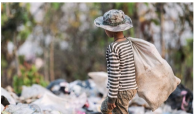

According to IBGE, the Northeast is the region with the highest number of children and adolescents in child labor situations in Brazil:
In 2023, 506,000 children and adolescents in the Northeast were in child labor situations.
The proportion of children and adolescents in child labor situations in the Northeast is 4.5%, above the national average.
The incidence of child labor increases with age.

The workload is another alarming factor: nearly 40% of children and adolescents in child labor work up to 14 hours per week. However, 20.6% of them have workloads of 40 hours or more, directly impacting their education and development. Among the youngest, aged 5 to 13 years, more than 80% work up to 14 hours per week. In the group aged 16 to 17 years, 31.1% work 40 hours or more.